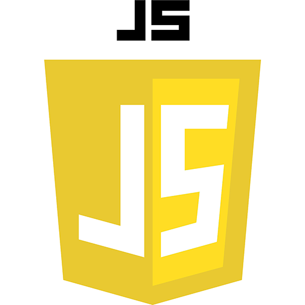
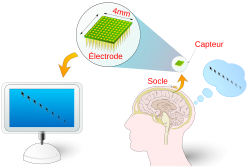
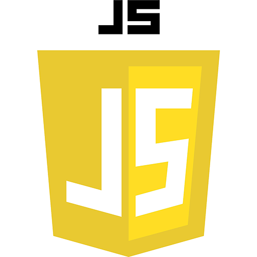
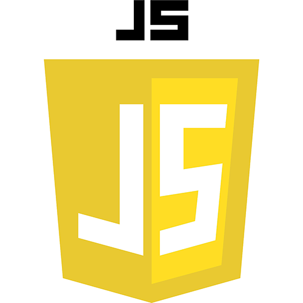

Je m'appelle MASART Raphael, j'ai 20 ans. Je suis étudiant en deuxième année de BTS
SIO (Services
Informatiques aux Organisations) option SLAM (Solutions
Logicielles et Applications Métiers) au sein du lycée DAMPIERRE, Valenciennes.
Dès mon plus jeune âge je me suis passionné pour l'informatique et les nouvelles technologies, je me
suis alors dirigé vers un
BAC STI2D (Sciences et Technologies de l'Industrie et du Développement Durable) option
SIN (Système d'Information et Numérique) au lycée DAMPIERRE à Valenciennes,
je me suis ensuite spécialisé dans le développement, d'où mon choix de l'option SLAM.
Pourquoi le BTS SIO ?
J'ai choisi le BTS SIO car depuis mes 15 ans je faisais des pages HTML/CSS en loisirs et je
souhaitais découvrir plus de langage pour plus tard m'orienté vers un travail dans ce
secteur. Quand un code me plait, plus je l'utilise et plus j’ai envie d'apprendre de
nouvelle fonctionnalités
Parcours
2025 - 2026 (Projet d'étude futur)
Formation professionnelle // Recherche d'emploi
2023 - 2025
BTS SIO (Services Informatiques aux Organisations) option SLAM (Solutions Logicielles et
Applications Métiers).
2020 - 2023
Bac STI2D (Sciences et Technologies de l'Industrie et du Développement Durable) option SIN
(Système d'Information et Numérique).
Compétences

Projets
AP3 - All4Sport (Application Flutter)
La société All4Sport souhaite la mise en production d'une application mobile interne
pour les caristes qui travaillent dans ses entrepôts.
Un ensemble de fonctionnalités ont été préalablement identifiées avec le client ALL4SPORT.
Elles ont été regroupées en modules pour faciliter le partitionnement du développement de
l'application mobile.
Voici les différents modules : Module 1 : Connexion des caristes Module 2 : Flash des QR code Module 3 : Arrivage de stock Module 4 : Synchronisation des stocks Module 5 : Liste des produits Module 6 : Mode déconnecté
Développement
Pour le développement, nous avons utilisé Flutter, un framework open source
développé par Google, qui permet de créer des applications mobiles, web et de bureau à
partir d'un code unique.
Prototype
Pour la création du prototype, nous avons utilisé Figma, Figma permet de
créer des maquettes interactives, facilitant ainsi la collaboration entre les designers et
les développeurs tout au long du processus de création.
Lucidchart
Pour créer des diagrammes et des schémas visuels, nous avons utilisé
Lucidchart, un outil de création de diagrammes en ligne.
GSB (Application JAVA-FX)
Mise en place d’un site web pour la gestion des dépenses liées aux visites chez un praticien.
Nous avons développé un site web innovant permettant aux utilisateurs de gérer efficacement
leurs dépenses dans le cadre de leurs visites chez un praticien. Ce site offre une interface
simple et intuitive, permettant aux utilisateurs de consulter facilement les frais associés à
chaque consultation.
En plus de la consultation des dépenses, le site permet également de les modifier en cas de
besoin, garantissant ainsi une flexibilité totale pour les utilisateurs. Si nécessaire, les
dépenses peuvent aussi être supprimées, offrant un contrôle complet sur la gestion des finances
liées aux soins de santé.
Ce système vise à simplifier le suivi des dépenses pour les patients, tout en assurant une
meilleure organisation et un accès rapide à l’historique des consultations.
Développement
Pour le développement, j'ai utilisé JavaFX, un framework Java permettant de
créer des interfaces graphiques riches et interactives pour des applications de bureau.
Base de données
Pour l'implémentation de la base de données, j'ai utilisé MySQL, un système
de gestion de base de données relationnelle très répandu et robuste. MySQL permet de créer,
organiser et gérer les données à l'aide de tables, de requêtes SQL.
Outils de collaboration
Notion est un outil de collaboration puissant qui permet de centraliser et
d’organiser toutes les informations d’une équipe au sein d’une seule plateforme.

Les interfaces cerveaux : Veille technologique
Neuralink est une startup
américaine
neurotechnologique qui
développe des implants
cérébraux d'interfaces
directes neuronales.
Interfaces Cerveau-Machine (ICM)
Définition : Technologie reliant directement le cerveau à un appareil (ordinateur,
robot, etc.).
Sites utilisés :
Presse.inserm
Google actualité
Objetconnecte.com
Next Inpact
Numerama
Google alert
Faster capital
Usbekitrica
Elon MUSK
Fondateur de Neuralink
Puces électroniques :
Appelé "Link" chez Neuralink, elle communique sans fil avec des
appareils externes (smartphones, ordinateurs).
La puce permet d'interagir directement avec la technologie pour restaurer des fonctions
et traiter des maladies neurologiques.
SNCF VOYAGEURS Stage 1ère année
Création de Babel : Logiciel ouverture et création BDD (Logiciel extérieur) Qu’est-ce que la BDD ?
La base de données est essentielle pour configurer le
logiciel de maintenance SID, qui est livré sans
configurations spécifiques pour les trains. Grâce à
Babel, il est possible de créer, modifier et afficher
cette base de données, permettant ainsi de charger
les configurations nécessaires dans le logiciel de
maintenance. La BDD sert principalement à stocker la
configuration du train soit le matériel
équipé
Qui va l’utiliser ?
Les administrateurs de SID utiliseront cette
application pour créer et afficher les BDD
Objectif :
Permettre à l’opérateur de pouvoir traiter des informations
de paramétrage d'application en fonction de la série de
trains sélectionnée par l'utilisateur lors de ses interventions.
Développement :
- Du cahier des charges jusqu’au rendu.
- Création des maquettes sur Figma.
- Développement du traitement côté serveur.
- Utilisation de Svelte.
- Ébauche de l’interface
Processus :
1. Le client se connecte avec un login simple
2. Dès connecté, il se situe sur la page home et peut décider si il
veut créer une BDD ou afficher une BDD déjà existante
3. Ensuite, il faudra créer une arborescence d’un dossier
où l’on pourra modifier, ajouter des informations
Association D2R Stage 2ème année
Refonte du site de l'association // création d'activité pour celle-ci.
Refonte du site
En lien avec le prestaire, j'ai accompagné sur la rafonte du site officiel.
Avec lui, j'ai principalement élaboré des pages d'articles ainsi que la modification du
cahier des charges. Création d'activité
J'ai fait avec l'equipe de COMMUNICATION des activités ainsi que des petits jeux pour
les jeunes de l'association.
Et enfin, j'ai effectué des "immersions flash" qui sont des cours particuliers pendant une
courte
période soit 1h par jeunes ou j'ai montré des pages HTML//CSS, ensuite je les accompagné
pour faire leur propre page.
Développement :
- Utilisation de HTML/CSS
- Utilisation de WordPress
Ce que j'ai fait :
1. Découverte de l'association
2. Elaboration de petite activité pour les jeunes
3. Modification du Cahier Des Charges
4. Modification de page déja existante


 
